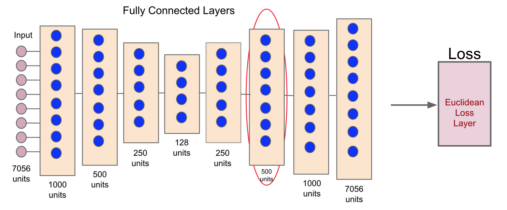

Bradly C. Stadie, Sergey Levine, Pieter Abbeel
$R_{bonus}(s,a) = R(s,a) + \beta \mathcal{N}(s,a)$
$\mathcal{N}: \mathcal{S} \times \mathcal{A} \rightarrow [0,1]$ (Novelty function)
$\mathcal{N}(s_t, a_t) \sim e_t(s_t, a_t)$
$\mathcal{N}(s_t, a_t) = \frac{e_t(s_t, a_t)}{t*C}$
Skip this during presentation!
$e_t(s_t, a_t) = \|s_{t+1} - \mathcal{M}(s_t, a_t)\|_2^2$
$\overline{e_t} = \frac{e_t}{max_{t \leq T}(t)}$
... and DQN (explained by the previous guy)
Find a lower dimensional representation
$\rightarrow$ Train this on 250K images
Revisiting $\mathcal{M}: \mathcal{S} \times \mathcal{A} \rightarrow \mathcal{S}$
Use for discussion only